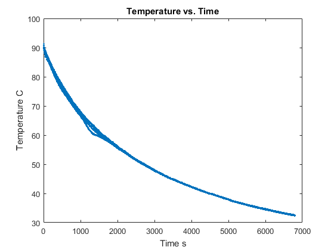
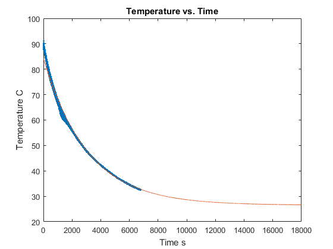

Contents
%HANWEN ZHAO %MEID:650-703
MCEN 3030 PROJECT3
clc close all clear all %NEWTON'S LAW OF COOLING data = load('cooling.txt'); % load data from txt file T = [data(:,2); data(:,3); data(:,4); data(:,5)]; % rearrange data t = [data(:,1); data(:,1); data(:,1); data(:,1)]; % create a single corresponding time vector plot(t,T,'*','markersize',1); % plot tghe data points xlabel('Time s') ylabel('Temperature C') title('Temperature vs. Time') hold on height = 0.16; % the height of glass width = 0.07; % the width of the glass A = pi * (width/2)^2; % calcultate the surface area vol = A * height; % calculte the volume of the glass rho = 1000; % water density kg/m^3 c = 4186; % water heat capacity kj/kg*celsius m = rho * vol; % calculate the mass of water
Problem 1
The equation from heat transfer qdot = -h*A*(T-T0) qdot = m*c(dT/dt) rewrite the eqn and take integral ln(T-T0) = -tau*t+C tau = (h*A/m*c) linearize the eqn Y = a1*x + a0 a0 = log(T-TO); a1 = -tau = -(h*A)/(m*c);
syms h T0 Ti = 26.5; % temperature of surrounding X = t; % set up the linear eqn Y = log(T-Ti); nx = length(X); ny = length(Y); Sx = sum(X); % linear lease-squares regression Sy = sum(Y); Sxy = sum(X.*Y); Sxx = sum(X.^2); a1 = (nx*Sxy-Sx*Sy)/(nx*Sxx-Sx^2); % calculate a1 a0 = (Sxx*Sy-Sxy*Sx)/(nx*Sxx-Sx^2); % calculate a0 h = double(vpasolve(a1 == -((h*A)/(m*c)), h)); % calculate the value of h T0 = double(vpasolve(a0 == log(T0 - Ti),T0)); % calculate the initial temperature fprintf('The coefficients of linear equation are a1 = %4.6f, a0 = %4.6f.\n',a1,a0) fprintf('The calculated coefficient h is %4.6f, the initial temperature T0 is %4.6f.\n',h,T0)
The coefficients of linear equation are a1 = -0.000329, a0 = 4.057925. The calculated coefficient h is 220.120559, the initial temperature T0 is 84.354136.
Problem 2
rewrite our equation
t2 = 1:5*60*60; % time for 5 hours tau = (h*A)/(m*c); % calculate tau T2 = exp(-tau*t2+a0)+Ti; % calculate temp regreting to the eqn we have plot(t2,T2) % plot data t3 = 10000; T3 = double(exp(-tau*t3+a0)+Ti); % calculate temp at t = 10000s fprintf('The estimate temperature at 10000s is %4.6f.\n',T3)
The estimate temperature at 10000s is 28.662719.
Problem 3
t4 = t(1:25); % obtain first 25 data T4 = (T(1:25))'; Xint = 1.5; % the time to be interpolated n = length(t4); for i = 1:n % calculte the product terms Li L(i) = 1; for j = 1:n if j ~= i L(i) = L(i)*(Xint-t4(j))/(t4(i)-t4(j)); end end end lagrange = double(sum(T4.*L)); % calculate the temp via Lagrange interpolating ploynomial fprintf('The predict temperature at t=1.5s via Lagrange interpolating polynomial is %4.6f.\n',lagrange) fprintf('The prediction is not working because the temperate at t=1 is 89.5, at t=2 is 90.4.\n') fprintf('The main reason of the method failure is that we have very noisy data at first 25 data points.\n') fprintf('The polynomial is trying to fit all the nosiy data at interger time instant, thus it gave us a extreme high value at t=1.5s.\n') fprintf('However the Nwtons polynimial will give us the similar high value due to the same reason.\n') fprintf('The linear spline interpolation should give us a reasonable value since it only use two points to calculate.\n')
The predict temperature at t=1.5s via Lagrange interpolating polynomial is 1645.459011. The prediction is not working because the temperate at t=1 is 89.5, at t=2 is 90.4. The main reason of the method failure is that we have very noisy data at first 25 data points. The polynomial is trying to fit all the nosiy data at interger time instant, thus it gave us a extreme high value at t=1.5s. However the Nwtons polynimial will give us the similar high value due to the same reason. The linear spline interpolation should give us a reasonable value since it only use two points to calculate.